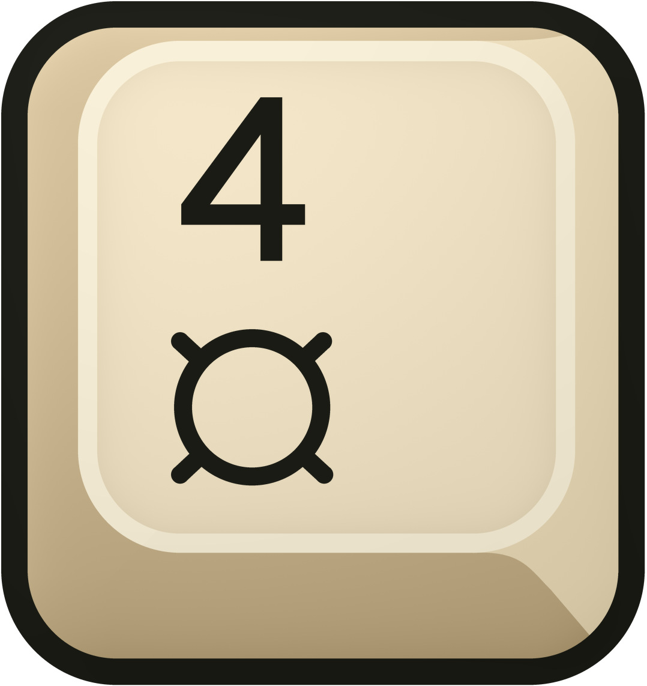
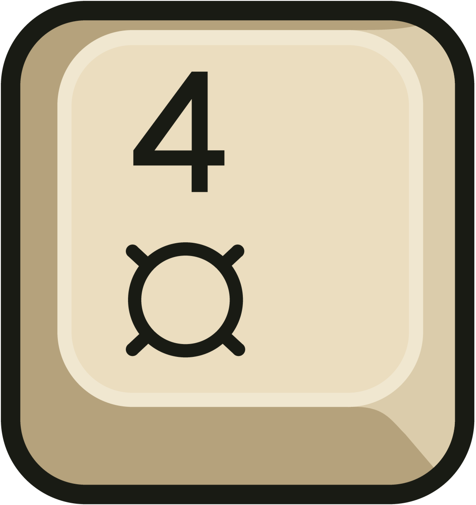

Earlier / shaded border

Even 44px geometry, but lighting produced 10 different RGB colors in the opaque border.
The border now has both even geometry and even color: 44px wide, with one solid #191b14 ink color matching the symbols. No lighting gradient remains on the border.
The approved standard is unchanged. The new flat-color alternative keeps its geometry but replaces all interior shading and texture with one solid color per region. All earlier versions are preserved.

Even 44px geometry, but lighting produced 10 different RGB colors in the opaque border.
The approved standard: a solid #191b14 border and symbols, with the original shaded ivory artwork.

Identical geometry with five solid colors: ink, shoulder, fold, pale rim, and ivory face. No gradients, dithering, or texture; only edges are antialiased.